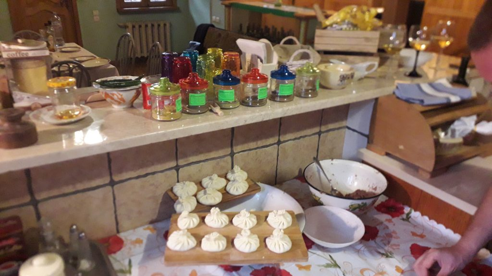
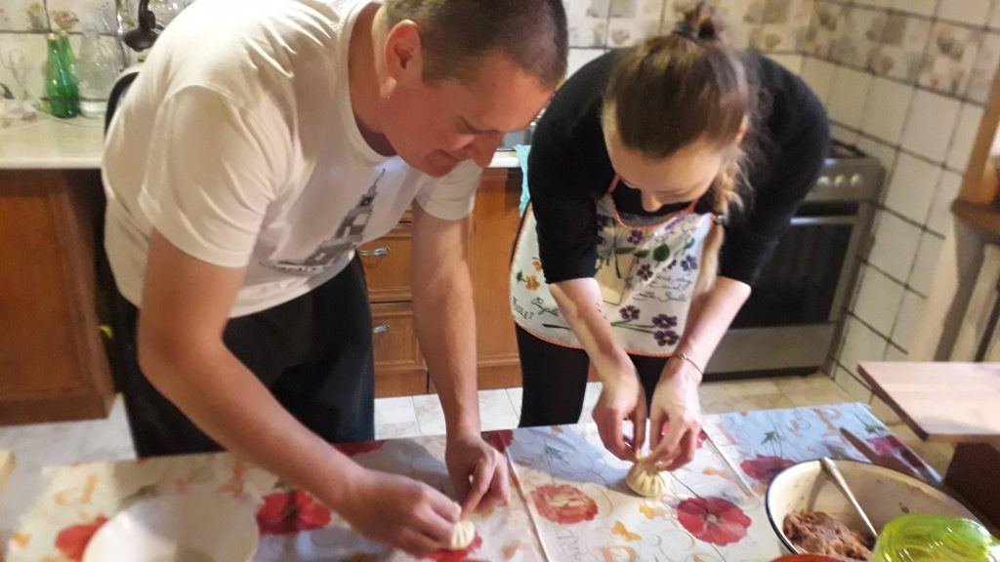
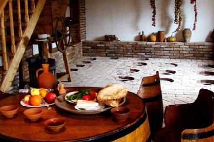
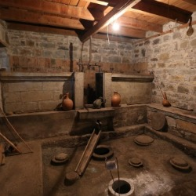
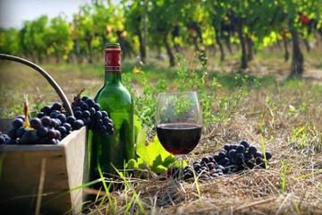
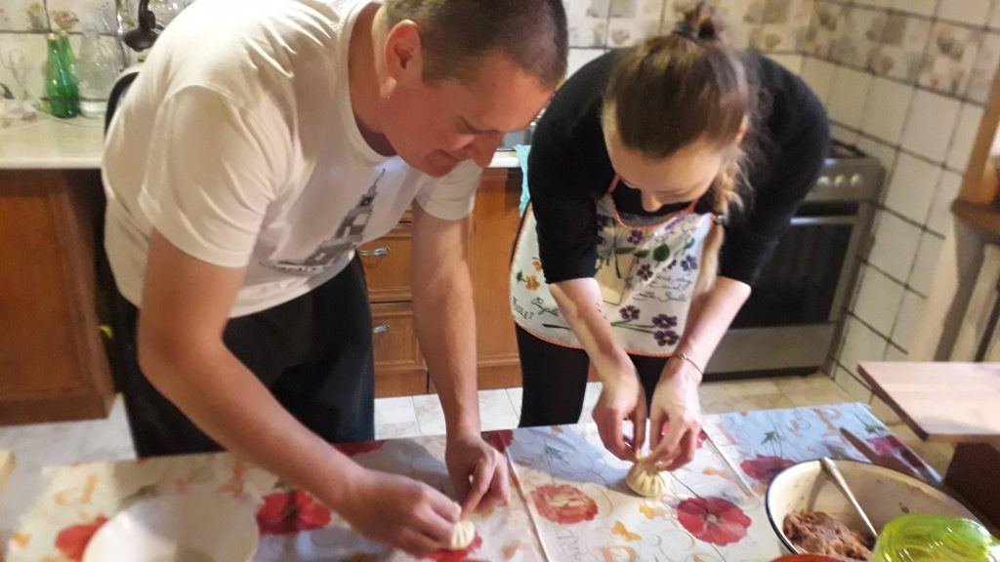
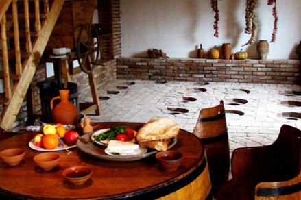
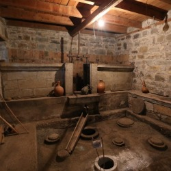
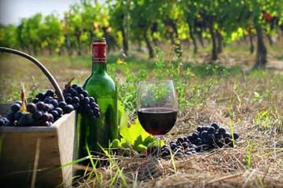

Kutaisi Wine and Food Tour

 







Wine tour takes place at a typical Imeretian village, about 30-40 minutes drive from Kutaisi. We will pass green valleys, amazing vineyards and reach a local winery. Our host, family of winemakers is wellknown not only in Georgia, as well as outisde it's borders. Travelers can taste different kind of drinks, produced according to traditional technology of wine making in a qvevri. A qvevri is a clay vessel buried in the ground, which provides the best conditions for fermenting juice, and can be as small as 50 liters, or as large as 1,500 liters in volume. The vessel provides stable temperature conditions for fermenting purposes, and preserves its flavor and aromas all year around. Your host will introduce step by step the process of making wine, as well as the equipment used to produce this amazing drink. The tour duration is flexible, and can be easily planned according to your schedule.
Culinary masterclasses in Kutaisi offers to Experience the delicious smells and taste of the most popular Georgian meals. Join a dynamic and joyful masterclass of Khinkali – meat dumpling, Khachapuri – cheese pie, Chadi – corn bread. Classes are organized in a local Georgian family. Khinkali is made by twisting knobs of dough stuffed with meat and spices. It is considered to be one of the most popular national dishes. Different regions of Georgia make khinkali with different fillings. The most popular is one with a mixture of pork and beef. In the mountains, khinkali is often made with a lamb meat. Churchkhela is a traditional candy made by repeatedly dipping a long string of nuts in tatara. It’s a mixture of flour, sugar, and Badagi (fresh grape juice). Georgians usually make Churchkhela in autumn when grapes and nuts are harvested. Churchkhela can also be made with dried fruit such as peach, apple, or plum and pumpkin seeds. Khachapuri, is Georgian cheese pie consisting of bread stuffed with melted cheese, often served sliced like a double-crust pizza. Different regions of Georgia have their own type of khachapuri. The most common is Imeretian khachapuri
Highlights
- Brief City Tour;
- Visit to Winery;
- Wine Testing;
- Wine History;
- Departure place - Kutaisi Hotel;
- Departure Time - 09:00(flexible);
- End Time - 15:00(flexible);
- Included - Transport, Guide;
- Excluded - Entrance fees;
Have a nice trip with Travel Kutaisi